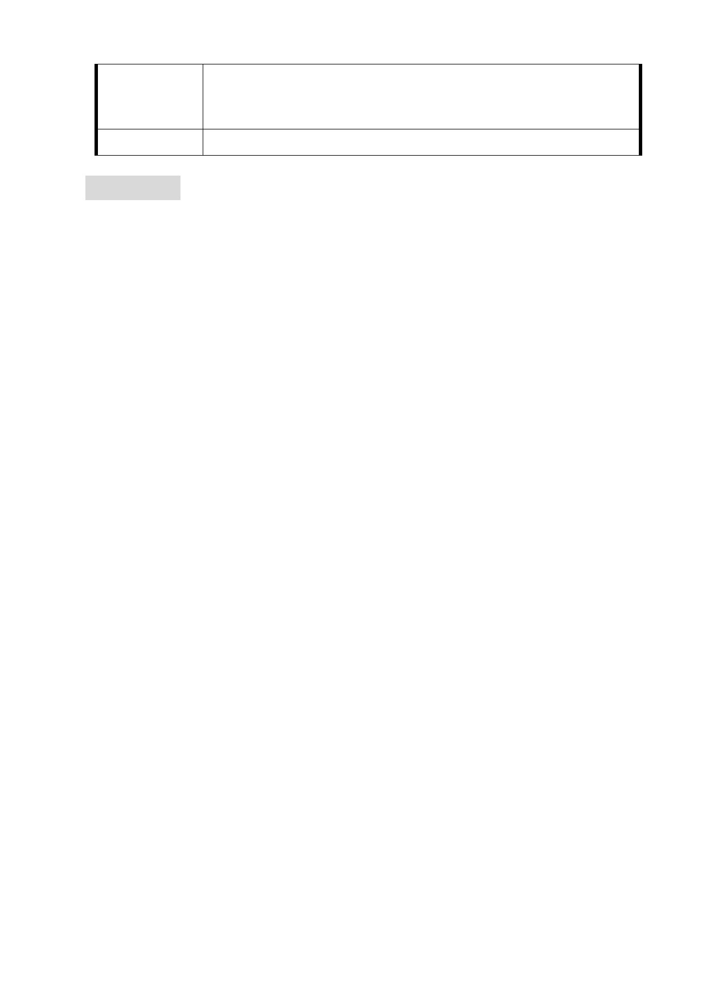

市府回覆
意見
一、 公共開放空間及受保護樹木部分同編號 1、5。
二、 地質安全部分同編號 6。
三、 環境影響評估部分同編號 20。
委 員 會 決 議 同編號 1
審議事項二
案名：「變更臺北市中正區公園段三小段10、11地號等2筆土地第四
種商業區為公園用地暨修訂文化觀光專用區(市議會舊址)土
地使用分區管制規定細部計畫案」
案情概要說明：
一、 計畫範圍：
本案基地位於中山南路及青島西路附近，北接臺北車站特
定專用區，西鄰城中商業中心，南鄰公保大樓、臺大醫院及博
愛特區，東為行政院、監察院、立法院等中央機關，面積約1.06
公頃。
二、 計畫緣起：
市議會舊址建物自市議會遷址後交由本府警察局中正第
一分局使用，後為配合該分局遷址，並考量地區商業發展特性，
且為建立城市外交及文化交流窗口，擬將該址作為國際城市交
流觀光文化中心，故本府前於92年10月30日公告實施「變更臺
北市中正區市議會舊址等行政區為文化觀光專用區計畫案」，
除供作城市文化觀光交流相關設施使用外，並得作為地區性商
業服務機能等功能使用，以塑造忠孝東西路商業軸帶之延續
性。
惟市議會舊址基地前因勞健保爭議款案，於93年間遭中央
查封部分土地致無法開發利用，迄102年9月土地解封後，即積
極辦理活化利用。另經檢討該街廓內之市有土地，目前多為閒
置建物或臨時性停車場等低度使用，與周邊已發展之商業及行
政大樓明顯不協調。爰擬透過整體規劃方式重新檢討該區土地
使用管制規定，提高土地經濟效益，並考量地區環境，於街廓
- 36 -